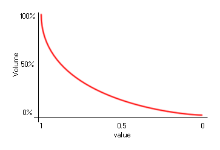

sound_global_volume(value);
| Argument | Description |
|---|---|
| value | The new global volume fom 0 to 1. |
Returns : N/A
With this function you can change the final volume of all sounds in your game. This will change the volume for all further instances where sound is played and the volume can be set to a value between
0 (silent) and 1 (full volume), with a value of 1 being the default volume. Note that any individual volumes set with the function sound_volume will also be
affected by this function meaning that the final volume for a sound is the compound result of the individual volume and the global volume. The volume scale is logarithmic in nature, so a volume of 0.5 is
not half volume, as illustrated by the image below:

if keyboard_check_pressed(vk_add)
{
if vol < 1 vol += 0.1;
sound_global_volume(vol);
}
The above code checks for a keypress and when it detects one it raises the global volume (to a maximum of 1).